일반기계기사 (2016-10-01 기출문제)
1과목: 재료역학
1. 5cm×4cm 블록이 x축을 따라 0.⑤cm만큼 인장되었다. y 방향으로 수축되는 변형률(Єy)은? (단, 푸아송 비(v)는 0.3이다.)
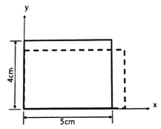
- 0.00015
- 0.0015
- 0.003
- 0.03
(정답률: 55%)

2. 그림과 같이 지름 d인 강철봉이 안지름 d, 바깥지름 D인 동관에 끼워져서 두 강체 평판 사이에서 압축되고 있다. 강철봉 및 동관에 생기는 응력을 각각 σs, σc라고 하면 응력의 미(σs/σc)의 값은? (단, 강철(Es) 및 동(Ec)이 탄성계수는 각각 Es=200GPa, Ec=120Gpa이다.)
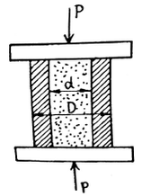
- 3/5
- 4/5
- 5/4
- 5/3
(정답률: 61%)
3. 동일 재료로 만든 길이 L, 지름 D인 축 A와 길이 2L, 지름 2D인 축 B를 동일각도만큼 비트는 데 필요한 비틀림 모멘트의 비 TA/TB의 값은 얼마인가?
- 1/4
- 1/8
- 1/16
- 1/32
(정답률: 61%)
4. 지름 d인 원형단면 기둥에 대하여 오일러 죄굴식의 회전반경은 얼마인가?
- d/2
- d/3
- d/4
- d/6
(정답률: 61%)
5. 지름 2cm, 길이 1m의 원형단면 외팔보의 자유단에 집중하중이 작용할 때, 최대 처짐량이 2cm가 되었다면, 최대 굽힘응력은 약 몇 MPa인가? (단, 보의 세로탄성계수는 200GPs이다.)
- 80
- 120
- 180
- 220
(정답률: 60%)
6. 지름 d인 원형 단면보에 가해지는 전단력을 V라 할 때 단면의 중립축에서 일어나는 최대 전단 응력은?
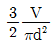
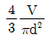
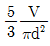
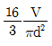
(정답률: 60%)
7. 오일러 공식이 세장비
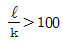
에 대해 성립한다고 할 때, 양단이 힌지인 원형단면 기둥에서 오일러 공식이 성립하기 위한 길이 “ℓ”과 지름 “d”와의 관계가 옳은 것은?- ℓ>4d
- ℓ>25d
- ℓ>50d
- ℓ>100d
(정답률: 65%)
8. 2축 응력 상태의 잴 내에서 서로 직각 방향으로 400MPa의 인장응력과 300MPa의 압축응력이 작용할 때 재료 내에 생기는 최대 수직응력은 몇 MPa인가?
- 500
- 300
- 400
- 350
(정답률: 46%)
9. 그림과 같은 벨트 구조물에서 하중 W가 작용할 때 P값은? (단, 벨트는 하중 W의 위치를 기준으로 좌우 대칭이며 0°<α<180°이다.
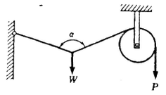
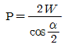
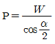
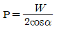
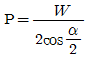
(정답률: 42%)
10. 그림과 같이 분포하중이 작용할 때 최대 굽힘모멘트가 일어나는 곳은 보의 좌측으로부터 얼마나 떨어진 곳에 위치하는가?
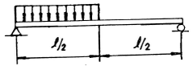
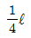
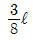
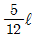
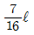
(정답률: 53%)
11. 그림과 같이 길이와 재질이 같은 두 개의 외팔보가 자유단에 각각 집중하중 P를 받고 있다. 첫째 보(1)의 단면 치수는 b×h이고, 둘째 보(2)의 단면치수는 b×2h라면, 보(1)의 최대 처짐 δ1과 보(2)의 최대 처짐 δ2의 비(δ1/δ2)는 얼마인가?
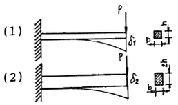
- 1/8
- 1/4
- 4
- 8
(정답률: 55%)
12. 어떤 직육면체에서 x방향으로 40MPa의 압축응력이 작용하고 y방향과 z방향으로 각각 10MPa씩 압축응력이 작용한다. 이 재료의 세로탄성계수는 100GPa, 푸아송 비는 0.25, x방향 길이는 200mm 일 때 x방향 길이의 변화량은?
- -0.07mm
- 0.07mm
- -0.085mm
- 0.085mm
(정답률: 36%)
13. 길이 L인 봉 AB가 그 양단에 고정된 두 개의 연직강선에 의하여 그림과 같이 수평으로 매달려 있다. 봉 AB의 자중은 무시하고, 봉이 수평을 유지하기 위한 연직하중 P의 작용점까지의 거리 x는? (단, 강선들은 단면적은 같지만 A단의 강선은 탄성계수 E1, 길이 ℓ1, B단의 강선은 탄성계수 E2, 길이 ℓ2이다.)
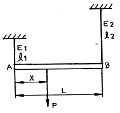
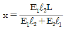
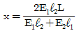
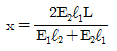
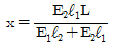
(정답률: 39%)
14. 지름 4cm의 원형 알루미늄 봉을 비틀림 재료시험기에 걸어 표면의 45°나선에 부착한 스트레인 게이지로 변형도를 측정하였더니 토크 120Nㆍm일 때 변형률 ε=150×10-6얻었다. 이 재료의 전단탄성계수는?
- 31.8 GPa
- 38.4 GPa
- 43.1 GPa
- 51.2 GPa
(정답률: 23%)
15. 그림과 같이 4kN/cm의 균일분포하중을 받는 일단 고정 타단 지지보에서 B점에서의 모멘트 MB는 약 몇 kNㆍm인가? (단, 균일단면보이며, 굽힘강성(EI)은 일정하다.)
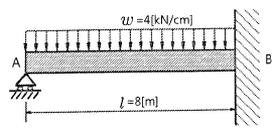
- 800
- 2000
- 3200
- 4000
(정답률: 48%)
16. 회전수 120rpm과 35kW를 전달할 수 있는 원형 단면축의 길이가 2m이고, 지름이 6cm일 때 축단(軸端)의 비틀림 각도는 약 몇 rad인가? (단, 이 재료의 가로탄성계수는 83GPa이다.)
- 0.019
- 0.036
- 0.⑤3
- 0.078
(정답률: 61%)
17. 균일분포하중을 받고 있는 길이가 L인 단순보의 처짐량을 δ로 제한한다면 균일 분포하중의 크기는 어떻게 표현되겠는가? (단, 보의 단면은 폭이 b이고 높이가 h인 직사가형이고 탄성계수는 E이다.)
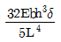
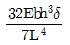
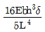
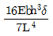
(정답률: 59%)
18. 단면적이 A, 탄성계수가 E, 길이가 L인 막대에 길이방향의 인장하중을 가하여 그 길이가 δ만틈 늘어났다면, 이 때 저장된 탄성변형 에너지는?
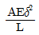
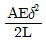
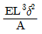
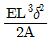
(정답률: 55%)
19. 지름이 1.2m, 두께가 10mm인 구형 압력용기가 있다. 용기 재질의 허용인장응력이 42MPa일 때 안전하게 사용할 수 있는 최대 내압은 약 몇 MPa인가?
- 1.1
- 1.4
- 1.7
- 2.1
(정답률: 62%)
20. 그림과 같은 단순보의 중앙점(C)에서 굽힘모멘트는?
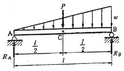
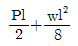
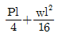
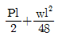
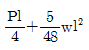
(정답률: 37%)
2과목: 기계열역학
21. 압력(P)과 부피(V)의 관계가 ‘PVk=일정하다’고 할 때 절대일(W12)와 공업일(Wt)의 관계로 옳은 것은?
- Wt=kW12
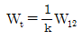
- Wt=(k-1)W12
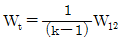
(정답률: 46%)
22. 분자량이 29이고, 정압비열이 10⑤J/(kgㆍK)인 이상기체의 정적비열은 약 몇 J/(kgㆍK)인가? (단, 일반기체상수는 8314.5 J/(kmolㆍK)이다.)
- 976
- 287
- 718
- 546
(정답률: 65%)
23. 다음 중 비체적의 단위는?
- kg/m3
- m3/kg
- m3/(kgㆍs)
- m3/(kgㆍs2)
(정답률: 62%)
24. 성능계수가 3.2인 냉동기가 시간당 20MJ의 열을 흡수한다. 이 냉동기를 작동하기 위한 동력은 몇 kW인가?
- 2.25
- 1.74
- 2.85
- 1.45
(정답률: 63%)
25. 폴리트로픽 변화의 관계식 “PVn=일정”에 있어서 n이 무한대로 되면 어느 과정이 되는가?
- 정압과정
- 등온과정
- 정적과정
- 단열과정
(정답률: 61%)
26. 실린더 내의 공기가 100kPa, 20℃ 상태에서 300kPa이 될 때까지 가역단열 과정으로 압축된다. 이 과정에서 실린더 내의 계에서 엔트로피의 변화는? (단, 공기의 비열비 k=1.4이다.)
- -1.35 kJ/(kgㆍK)
- 0 kJ/(kgㆍK)
- 1.35 kJ/(kgㆍK)
- 13.5 kJ/(kgㆍK)
(정답률: 59%)
27. 5kg의 산소가 정압하에서 체적이 0.2m3에서 0.6m3로 증가했다. 산소를 이상기체로 보고 정압비열 Cp=0.92 kJ/(kgㆍK)로 하여 엔트로피의 변화를 구하였을 때 그 값은 약 얼마인가?
- 1.857 kJ/K
- 2.746 kJ/K
- 5.⑤4 kJ/K
- 6.507 kJ/K
(정답률: 62%)
28. 이상적인 증기 압축 냉동 사이클의 과정은?
- 정적방열과정 → 등엔트로피 압축과정 → 정적증발과정 → 등엔탈피 팽창과정
- 정적방열과정 → 등엔트로피 압축과정 → 정압증발과정 → 등엔탈피 팽창과정
- 정적증발과정 → 등엔트로피 압축과정 → 정적방열과정 → 등엔탈피 팽창과정
- 정압증발과정 → 등엔트로피 압축과정 → 정압방열과정 → 등엔탈피 팽창과정
(정답률: 43%)
29. 고열원의 온도가 157℃이고, 저열원의 온도가 27℃의 카르노 냉동기의 성적계수는 약 얼마인가?
- 1.5
- 1.8
- 2.3
- 3.2
(정답률: 65%)
30. 0.6MPa, 200℃의 수증기가 50m/s의 속도로 단열 노즐로 유입되어 0.15MPa, 건도 0.99인 상태로 팽창하였다. 증기의 유출 속도는? (단, 노즐 입구에서 엔탈피는 2850kJ/kg, 출구에서 포화액의 엔탈피는 467kJ/kg, 증발 잠열은 2227kJ/kg 이다.)
- 약 600 m/s
- 약 700 m/s
- 약 800 m/s
- 약 900 m/s
(정답률: 21%)
31. 물질의 양에 따라 변화하는 종량적 상태량(extensive property)은?
- 밀도
- 체적
- 온도
- 압력
(정답률: 65%)
32. 열역학적 관점에서 일과 열에 관한 설명 중 틀린 것은?
- 일과 열은 온도와 같은 열역학적 상태량이 아니다.
- 일의 단위는 J(jouli)이다.
- 일의 크기는 힘과 그 힘이 작용하여 이동한 거리를 곱한 값이다.
- 일과 열은 점함수(point function)이다.
(정답률: 63%)
33. 그림과 같은 이상적인 Rankine cycle에서 각각의 엔탈피는 h1=168kJ/kg, h2=173kJ/kg, h3=3195kJ/kg, h4=2071kJ/kg일 때, 이 사이클의 열효율은 약 얼마인가?
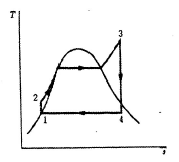
- 30%
- 34%
- 37%
- 43%
(정답률: 63%)
34. 다음에 제시된 에너지 값 중 가장 크기가 작은 것은?(오류 신고가 접수된 문제입니다. 반드시 정답과 해설을 확인하시기 바랍니다.)
- 400 Nㆍcm
- 4 cal
- 40 J
- 4000Paㆍm3
(정답률: 39%)
35. 공기 표준 Brayton 사이클 기관에서 최고 압력이 500kPa, 최저압력은 100kPa이다. 비열비(k)는 1.4일 때, 이 사이클의 열효율은?
- 약 3.9%
- 약 18.9%
- 약 36.9%
- 약 26.9%
(정답률: 61%)
36. 피스톤-실린더 장치에 들어있는 100kPa, 26.84℃의 공기가 600kPa까지 가역단열과정으로 압축된다. 비열비 k=1.4로 일정하다면 이 과정 동안에 공기가 받은 일은 약 얼마인가? (단, 공기의 기체상수는 0.287 kJ/(kgㆍK)이다.)
- 263 kJ/kg
- 171 kJ/kg
- 144 kJ/kg
- 116 kJ/kg
(정답률: 49%)
37. 1kg의 기체가 압력 50kPa, 체적 2.5m3의 상태에서 압력 1.2MPa, 체적 0.2m3의 상태로 변하였다. 엔탈피의 변화량은 약 몇 kJ인가? (단, 내부에너지의 변화는 없다.)
- 365
- 206
- 155
- 115
(정답률: 58%)
38. 공기 1kg을 t1=10℃, P1=0.1MPa, V1=0.8m3상태에서 단열 과정으로 t2=167℃, P2=0.7MPa까지 압축시킬 때 압축에 필요한 일량은 약 얼마인가? (단, 공기의 정압비열과 정적비열은 각각 1.0035kJ/(kgㆍK), 0.7165kJ/(kgㆍK)이고, t는 온도, P는 압력, V는 체적을 나타낸다.)
- 112.5J
- 112.5kJ
- 157.5J
- 157.5kJ
(정답률: 29%)
39. 온도가 300K이고, 체적이 1m3, 압력이 1⑤N/m2인 이상기체가 일정한 온도에서 3×104J의 일을 하였다. 계의 엔트로피 변화량은?
- 0.1 J/K
- 0.5 J/K
- 50 J/K
- 100 J/K
(정답률: 54%)
40. 어느 이상기체 2kg이 압력 200kPa, 온도 30℃의 상태에서 체적 0.8m3를 차지한다. 이 기체의 기체상수는 약 몇 kJ/(kgㆍK)인가?
- 0.264
- 0.528
- 2.67
- 3.53
(정답률: 64%)
3과목: 기계유체역학
41. 잠수함의 거동을 조사하기 위해 바닷물 속에서 모형으로 실험을 하고자 한다. 잠수함의 실형과 모형의 크기 비율은 7:1 이며, 실제 잠수함이 8m/s로 운전한다면 모형의 속도는 약 몇 m/s인가?
- 28
- 56
- 87
- 132
(정답률: 65%)
42. 그림과 같이 45° 꺾어진 관에 물이 평균속도 5m/s로 흐른다. 유체의 분출에 의해 지지점 A가 받는 모멘트는 약 몇 Nㆍm인가? (단, 출구 단면적은 10-3m2이다.)
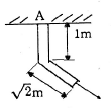
- 3.5
- 5
- 12.5
- 17.7
(정답률: 35%)
43. 주 날개의 평면도 면적이 21.6m2이고 무게가 20kN인 경비행기의 이륙속도는 약 몇 km/h 이상이어야 하는가? (단, 공기의 밀도는 1.2kg/m3, 주 날개의 양력계수는 1.2이고, 항력은 무시한다.)
- 41
- 91
- 129
- 141
(정답률: 55%)
44. 물이 흐르는 어떤 관에서 압력이 120kPa, 속도가 4m/s 일 때, 에너지선(Energy Line)과 수력기울기선(Hydraulic Grade Line)의 차이는 약 몇 cm 인가?
- 41
- 65
- 71
- 82
(정답률: 56%)
45. 뉴턴의 점성법칙은 어떤 변수(물리량)들의 관계를 나타낸 것인가?
- 압력, 속도, 점성계수
- 압력, 속도기울기, 동점성계수
- 전단응력, 속도기울기, 점성계수
- 전단응력, 속도, 동점성계수
(정답률: 58%)
46. 관로 내에 흐르는 완전발달 층류유동에서 유속을 1/2로 줄이면 관로 내 마찰손실수두는 어떻게 되는가?
- 1/4로 줄어든다.
- 1/2로 줄어든다.
- 변하지 않는다.
- 2배로 늘어난다.
(정답률: 29%)
47. 유체 내에 수직으로 잠겨있는 원형판에 작용하는 정수력학적 힘의 작용점에 관한 설명으로 옳은 것은?
- 원형판의 도심에 위치한다.
- 원형판의 도심 위쪽에 위치한다.
- 원형판의 도심 아래쪽에 위치한다.
- 원형판의 최하단에 위치한다.
(정답률: 58%)
48. 동점성 계수가 15.68×10-6m2/s인 공기가 평판 위를 길이 방향으로 0.5m/s의 속도로 흐르고 있다. 선단으로부터 10cm 되는 곳의 경계층 두께의 2배가 되는 경계층의 두께를 가지는 곳을 선단으로부터 몇 cm되는 곳인가?
- 14.14
- 20
- 40
- 80
(정답률: 27%)
49. 비중 8.16의 금속을 비중 13.6의 수은에 담근다면 수은 속에 잠기는 금속의 체적은 전체 체적의 약 몇 % 인가?
- 40%
- 50%
- 60%
- 70%
(정답률: 62%)
50. 그림과 같이 비중 0.85인 기름이 흐르고 있는 개수로에 피토관을 설치하였다. △h=30mm, h=100mm일 때 기름의 유속은 약 몇 m/s인가?
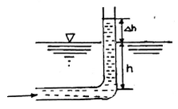
- 0.767
- 0.976
- 6.25
- 1.59
(정답률: 55%)
51. 안지름 0.25m, 길이 100m인 매끄러운 수평 강관으로 비중 0.8, 점성계수 0.1Paㆍs인 기름을 수송한다. 유량이 100L/s 일 때의 관 마찰손실 수두는 유량이 50L/s 일 때의 몇 배 정도가 되는가? (단, 층류의 관 마찰계수는 64/Re 이고, 난류일 때의 관 마찰계수는 0.3164Re-1/4이며, 임계레이놀즈 수는 2300이다.)
- 1.55
- 2.12
- 4.13
- 5.04
(정답률: 35%)
52. 일률(power)을 기본 차원인 M(질량), L(길이), T(시간)로 나타내면?
- L2T-2
- MT-2L-1
- ML2T-2
- ML2T-3
(정답률: 48%)
53. 그림과 같이 U자 관 액주계가 x 방향으로 등가속 운동하는 경우 x 방향 가속도 ax는 약 몇 m/s2인가? (단, 수은의 비중은 13.6이다.)
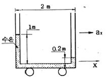
- 0.4
- 0.98
- 3.92
- 4.9
(정답률: 45%)
54. 지름이 2cm인 관에 밀도 1000kg/m3, 점성계수 0.4 Nㆍs/m2인 기름이 수평면과 일정한 각도로 기울어진 관에서 아래로 흐르고 있다. 초기 유량 측정위치의 유량이 1×10-5m3/s이었고, 초기 측정위치에서 10m 떨어진 곳에서의 유량도 동일하다고 하면, 이 관의 수평면에 대해 약 몇 °기울어져 있는가? (단, 관 내 흐름은 완전발달 층류유동이다.)
- 6°
- 8°
- 10°
- 12°
(정답률: 18%)
55. 원관(pipe) 내에 유체가 완전 발달한 층류 유동일 때 유체 유동에 관계한 가장 중요한 힘은 다음 중 어느 것인가?
- 관성력과 점성력
- 압력과 관성력
- 중력과 압력
- 표면장력과 점성력
(정답률: 62%)
56. 다음과 같은 수평으로 놓인 노즐이 있다. 노즐의 입구는 면적이 0.1m2이고 출구의 면적은 0.02m2이다. 정상, 비압축성이며 점성의 영향이 없다면 출구의 속도가 50m/s 일 때 입구와 출구의 압력차(P1-P2)는 약 몇 kPa인가? (단, 이 공기의 밀도는 1.23kg/m3이다.)
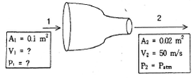
- 1.48
- 14.8
- 2.96
- 29.6
(정답률: 47%)
57. 절대압력 700kPa의 공기를 담고 있고 체적은 0.1m3, 온도는 20℃인 탱크가 있다. 순간적으로 공기는 밸브를 통해 바깥으로 단면적 75mm2를 통해 방출도기 시작한다. 이 공기의 유속은 310m/s이고, 밀도는 6kg/m3이며 탱크 내의 모든 물성치는 균일한 분포를 갖는다고 가정한다. 방출하기 시작하는 시각에 탱크 내의 밀도의 시간에 따른 변화율은 몇 kg/(m3ㆍs)인가?
- -12.338
- -2.582
- -20.381
- -1.395
(정답률: 25%)
58. 비점성, 비압축성 유체의 균일한 유동장에 유동방향과 직각으로 정지된 원형 실린더가 놓여있다고 할 때, 실린더에 작용하는 힘에 관하여 설명한 것으로 옳은 것은?
- 항력과 양력이 모두 영(0)이다.
- 항력은 영(0)이고 양력은 영(0)이 아니다.
- 양력은 영(0)이고 항력은 영(0)이 아니다.
- 항력과 양력 모두 영(0)이 아니다.
(정답률: 44%)
59. 다음 중 2차원 비압축성 유동의 연속방정식을 만족하지 않는 속도 벡터는?
- V=(16y-12x)i+(12y-9x)j
- V=-5xi+5yj
- V=(2x2+y2)i+(-4xy)j
- V=(4xy+y)i+(6xy+3x)j
(정답률: 52%)
60. 그림과 같은 밀폐된 탱크 안에 각각 비중이 0.7, 1.0인 액체가 채워져 있다. 여기서 각도 θ가 20°로 기울어진 경사관에서 3m 길이까지 비중 1.0인 액체가 채워져 있을 때 점 A의 압력과 점 B의 압력 차이는 약 몇 kPa인가?
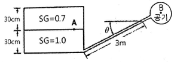
- 0.8
- 2.7
- 5.8
- 7.1
(정답률: 34%)
4과목: 기계재료 및 유압기기
61. 탄소를 제품에 침투시키기 위해 목탄을 부품과 함께 침탄상자 속에 넣고 900~950℃의 온도 범위로 가열로 속에서 가열 유지시키는 처리법은?
- 질화법
- 가스 침탄법
- 시멘테이션에 의한 경화법
- 고주파 유도 가열 경화법
(정답률: 71%)
62. 베이나이트(bainite)조직을 얻기 위한 항온열처리 조작으로 가장 적합한 것은?
- 마퀜칭
- 소성가공
- 노멀라이징
- 오스템퍼링
(정답률: 68%)
63. 면심입방격자(FCC) 금속의 원자수는?
- 2
- 4
- 6
- 8
(정답률: 64%)
64. 철과 아연을 접촉시켜 가열하면 양자의 친화력에 의하여 원자 간의 상호 확산이 일어나서 합금화하므로 내식성이 좋은 표면을 얻는 방법은?
- 칼로라이징
- 크로마이징
- 세러다이징
- 보로나이징
(정답률: 64%)
65. 담금질 조직 중 가장 경도가 높은 것은?
- 펄라이트
- 마텐자이트
- 소르바이트
- 트루스타이트
(정답률: 77%)
66. 다음 중 금속의 변태점 측정방법이 아닌 것은?
- 열분석법
- 자기분석법
- 전기저항법
- 정점분석법
(정답률: 51%)
67. Al에 10~13%Si를 함유한 합금은?
- 실루민
- 라우탈
- 두랄루민
- 하이드로 날륨
(정답률: 64%)
68. 다음 중 Ni-Fe계 합금이 아닌 것은?
- 인바
- 톰백
- 엘린바
- 플래티나이트
(정답률: 64%)
69. 탄소강에서 인(P)으로 인하여 발생하는 취성은?
- 고온 취성
- 불림 취성
- 상온 취성
- 뜨임 취성
(정답률: 71%)
70. 구리합금 중에서 가장 높은 경도와 강도를 가지며. 피로한도가 우수하여 고급스프링 등에 쓰이는 것은?
- Cu-Be 합금
- Cu-Cd 합금
- Cu-Si 합금
- Cu-'Ag 합금
(정답률: 56%)
71. 유압회로에서 캐비테이션이 발생하지 않도록 하기 위한 방지대책으로 가장 적합한 것은?
- 흡입관에 급속 차단장치를 설치한다.
- 흡입 유체의 유온을 높게 하여 흡입한다.
- 과부하 시는 패킹부에서 공기가 흡입되도록 한다.
- 흡입관 내의 평균유속이 3.5m/s 이하가 되도록 한다.
(정답률: 60%)
72. 유압 작동유의 점도가 너무 높은 경우 발생되는 현상으로 거리가 먼 것은?
- 내부마찰이 증가하고 온도가 상승한다.
- 마찰손실에 의한 펌프동력 소모가 크다.
- 마찰부분의 마모가 증대된다.
- 유동저항이 증대하여 압력손실이 증가된다.
(정답률: 65%)
73. 속도 제어 회로 방식 중 미터-인 회로와 미터-아웃 회로를 비교하는 설명으로 틀린 것은?
- 미터-인 회로는 피스톤 측에만 압력이 형성되나 미터-아웃 회로는 피스톤 측과 피스톤 로드 측 모두 압력이 형성된다.
- 미터-인 회로는 단면적이 넓은 부분을 제어하므로 상대적으로 속도조절에 유리하나, 미터-아웃 회로는 단면적이 좁은 부분을 제어하므로 상대적으로 불리하다.
- 미터-인 회로는 인장력이 작용할 때 속도조절이 불가능하나, 미터-아웃 회로는 부하의 방향에 관계없이 속도조절이 가능하다.
- 미터-인 회로는 탱크로 드레인되는 유압 작동유에 주로 열이 발생하나, 미터-아웃 회로는 실린더로 공급되는 유압 작동유에 주로 열이 발생한다.
(정답률: 45%)
74. 다음 중 유량제어밸브에 속하는 것은?
- 릴리프 밸브
- 시퀀스 밸브
- 교축 밸브
- 체크 밸브
(정답률: 45%)
75. 다음과 같은 특징을 가진 유압유는?
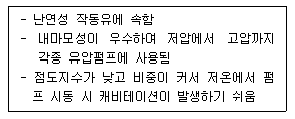
- 인산 에스테르형 작동유
- 수중 유형 유화유
- 순광유
- 유중 수형 유화유
(정답률: 67%)
76. 다음 보기와 같은 유압기호가 나타내는 것은?
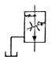
- 가변 교축 밸브
- 무부하 릴리프 밸브
- 직렬형 유량조정 밸브
- 바이패스형 유량조정 밸브
(정답률: 52%)
77. 채터링(chattering) 현상에 대한 설명으로 틀린 것은?
- 일종의 자려진동현상이다.
- 소음을 수반한다.
- 압력이 감소하는 현상이다.
- 릴리프 밸브 등에서 발생한다.
(정답률: 61%)
78. 베임 펌프의 1회전당 유량이 40cc일 때, 1분당 이론 토출유량이 25리터 이면 회전수는 약 몇 rpm인가? (단, 내부누설량과 흡입저항은 무시한다.)
- 62
- 625
- 125
- 745
(정답률: 59%)
79. 유압 모터에서 1회전당 배출유량이 60cm3/rev이고 유압유의 공급압력은 7MPa일 때 이론 토크는 약 몇 Nㆍm인가?
- 668.8
- 66.8
- 1137.5
- 113.8
(정답률: 46%)
80. 유압유의 여과방식 중 유압펌프에서 나온 유압유의 일부만을 여과하고 나머지는 그대로 탱크로 가도록 하는 형식은?
- 바이패스 필터(by-pass filter)
- 전류식 필터(full-flow filter)
- 샨트식 필터(shunt flow filter)
- 원심식 필터(centrifugal filter)
(정답률: 72%)
5과목: 기계제작법 및 기계동력학
81. 고유진동수가 1Hz인 진동측정기를 사용하여 2.2Hz의 진동을 측정하려고 한다. 측정기에 의해 기록된 진폭이 0.⑤cm라면 실제 진폭은 약 몇 cm인가? (단, 감쇠는 무시한다.)
- 0.01cm
- 0.02cm
- 0.03cm
- 0.04cm
(정답률: 10%)
82. 20Mg의 철도차량이 0.5m/s의 속력으로 직선 운동하여 정지되어 있는 30Mg의 화물차량과 결합한다. 결합하는 과정에서 차량에 공급되는 동력은 없으며 브레이크도 풀려 있다. 결합 직후의 속력은 약 몇 m/s 인가?
- 0.25
- 0.20
- 0.15
- 0.10
(정답률: 51%)
83. 질량 관성모멘트가 20kgㆍm2인 플라이 휠(fly wheel)을 정지 상태로부터 10초 후 3600rpm으로 회전시키기 위해 일정한 비율로 가속하였다. 이때 필요한 토크는 약 몇 Nㆍm인가?
- 654
- 754
- 854
- 954
(정답률: 39%)
84. 고유 진동수 f(Hz), 고유 원진동수 w(rad/s), 고유 주기 T(s)사이의 관계를 바르게 나타낸 식은?
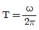
- T⍵=f
- Tf=1
- f⍵=2π
(정답률: 52%)
85. 그림과 같이 질량 100kg의 상자를 동마찰계수가 μ1=0.2인 길이 2.0m의 바닥 a와 동마찰계수가 μ2=0.3인 길이 2.5m의 바닥 b를 지나 A 지점에서 C 지점까지 밀려고 한다. 사람이 하여야 할 일은 약 몇 J인가?
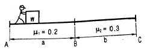
- 1128 J
- 2256 J
- 3760 J
- 5640 J
(정답률: 47%)
86. 1자유도 질량-스프링계에서 초기조건으로 변위 x0가 주어진 상태에서 가만히 놓아 진동이 일어나나면 진동변위를 나타내는 식은? (단, wn은 계의 고유진동수이고, t는 시간이다.)
- x0coswnt
- x0sinwnt
- x0cos2wnt
- x0sin2wnt
(정답률: 35%)
87. 그림과 같이 바퀴가 가로방향(x축 방향)으로 미끄러지지 않고 굴러가고 있을 때 A점의 속력과 그 방향은? (단, 바퀴 중심점의 속도는 v이다.)
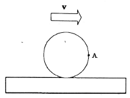
- 속력:v, 방향 x축 방향
- 속력:v, 방향 -y축 방향
- 속력:√2v, 방향 -y축 방향
- 속력:√2v, 방향 x축 방향에서 아래로 45° 방향
(정답률: 42%)
88. 질량 70kg인 군인이 고공에서 낙하산을 펼치고 10m/s의 초기 속도로 낙하하였다. 공기의 저항이 350N일 때 20m 낙하한 후의 속도는 약 몇 m/s인가?
- 16.4 m/s
- 17.1m/s
- 18.9m/s
- 20.0m/s
(정답률: 40%)
89. 정지된 물에서 0.5m/s의 속도를 낼 수 있는 뱃사공이 있다. 이 뱃사공이 0.1m/s로 흐르는 강물을 거슬러 400m를 올라가는 데 걸리는 시간은?
- 10분
- 13분 20초
- 16분 40초
- 22분 13초
(정답률: 51%)
90. 질량, 스프링, 댑퍼로 구성된 단순화된 1자유도 감쇠계에서 다음 중 그 값만으로 직접 감쇠비(damped ratio, ζ)를 구할 수 있는 것은?
- 대수 감소율(logarithmic decrement)
- 감쇠 고유 진동수(damped natural frequency)
- 스프링 상수(spring coefficient)
- 주기(period)
(정답률: 47%)
91. 오토콜리메이터의 부속품이 아닌 것은?
- 평면경
- 콜리 프리즘
- 펜타 프리즘
- 폴리곤 프리즘
(정답률: 30%)
92. 이미 가공되어 있는 구명에 다소 큰 강철 볼을 압입하여 통과시켜서 가공물의 표면을 소성 변현시켜 정밀도가 높은 면을 얻는 가공법은?
- 버핑(buffing)
- 버니싱(burnishing)
- 숏 피닝(shot peening)
- 배럴 다듬질(barrel finishing)
(정답률: 53%)
93. 공작물을 양극으로 하고 전기저항이 적은 Cu, Zn을 음극으로 하여 전해액 속에 넣고 전기를 통하면, 가공물 표면이 전기에 의한 화학적 작용으로 매끈하기 가공되는 가공법은?
- 전해연마
- 전해연삭
- 워터젯가공
- 초음파가공
(정답률: 65%)
94. 다음 빈칸에 들어갈 숫자가 옳게 짝지어진 것은?
- A:0.36, B:48
- A:0.36, B:75
- A:0.6, B:48
- A:0.6, B:75
(정답률: 61%)
95. 호브 절삭날의 나사를 여러 줄로 한 것으로 거친 절삭에 주로 쓰이는 호브는?
- 다줄 호브
- 단체 호브
- 조립 호브
- 초경 호브
(정답률: 65%)
96. 다이에 아연, 납, 주석 등의 연질금속을 넣고 제품 형상의 펀치로 타격을 가하여 길이가 짧은 치약튜브, 약품튜브 등을 제작하는 압출방법은?
- 간접 압출
- 열간 압출
- 직접 압출
- 충격 압출
(정답률: 64%)
97. 용접을 기계적인 접합 방법과 비교할 때 우수한 점이 아닌 것은?
- 기밀, 수밀, 유밀성이 우수하다.
- 공정 수가 감소되고 작업시간이 단축된다.
- 열에 의한 변질이 없으며 품질검사가 쉽다.
- 재료가 절약되므로 공박물의 중량을 가볍게 할 수 있다.
(정답률: 64%)
98. 제작 개수가 적고, 큰 주물품을 만들 때 재료과 제작비를 절약하기 위해 골격만 목재로 만들고 골격 사이를 점토로 메워 만든 모형은?
- 현형
- 골격형
- 긁기형
- 코어형
(정답률: 63%)
99. 절삭가공 시 발생하는 절삭온도 측정방법이 아닌 것은?
- 부식을 이용하는 방법
- 복사고온계를 이용하는 방법
- 열전대(thermocouple)에 의한 방법
- 칼로리미터(calorimeter)에 의한 방법
(정답률: 62%)
100. 나사측정 방법 중 삼침법(Three wire method)에 대한 설명으로 옳은 것은?
- 나사의 길이를 측정하는 법
- 나사의 골지름을 측정하는 법
- 나사의 바깥지름을 측정하는 법
- 나사의 유효지름을 측정하는 법
(정답률: 58%)
Єx = (변형량) / (원래 길이) = 0.⑤ / 5 = 0.01
푸아송 비(v)는 0.3이므로, y 방향으로의 변형률(Єy)은 다음과 같다.
Єy = -v * Єx = -0.3 * 0.01 = -0.003
여기서 음수 부호는 수축을 나타내며, 따라서 절댓값을 취하면 0.003이 된다. 따라서 정답은 "0.003"이다.